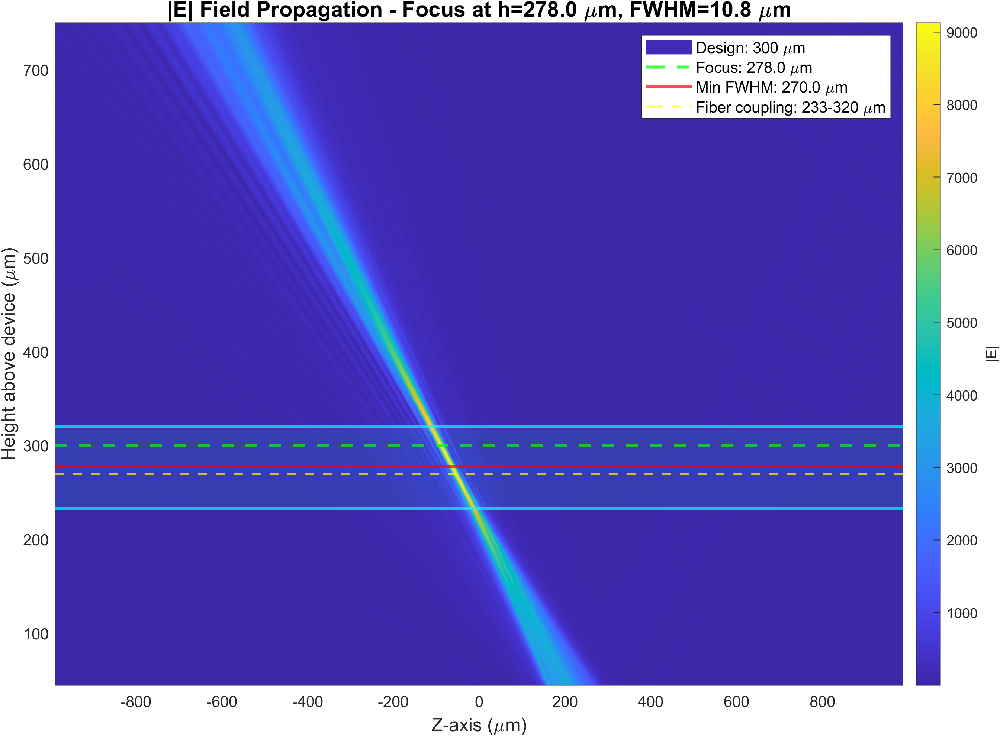
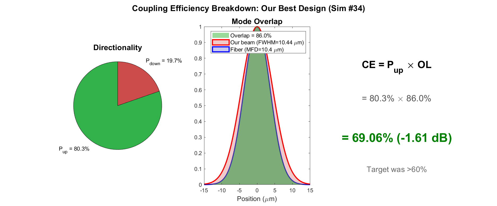
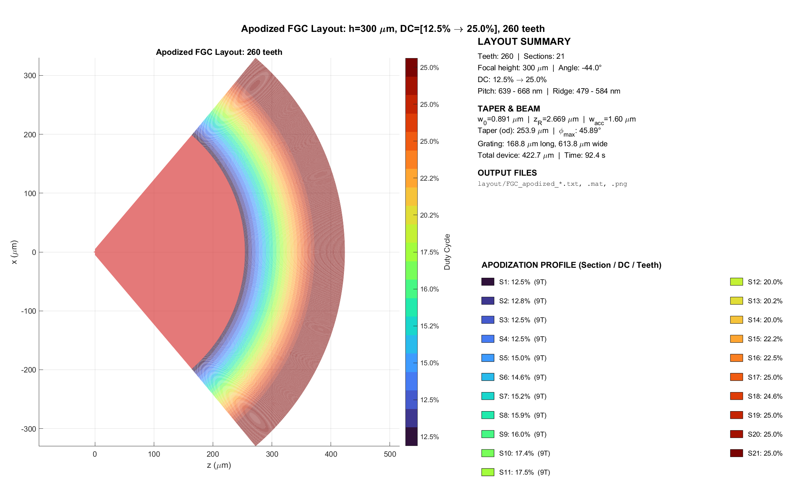
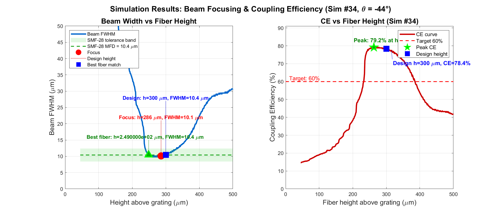
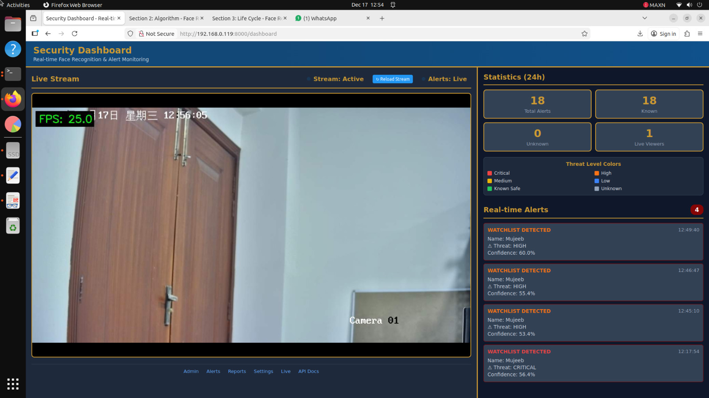
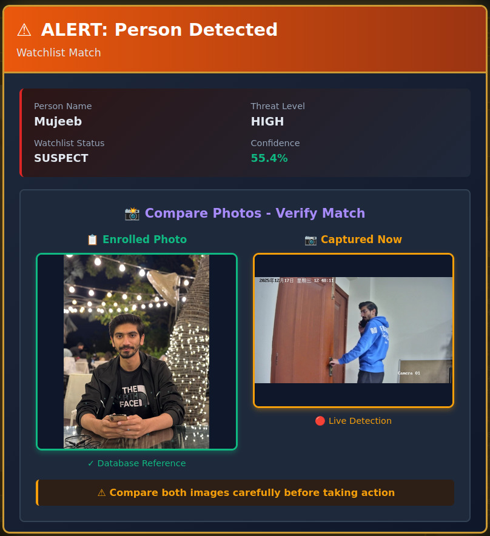
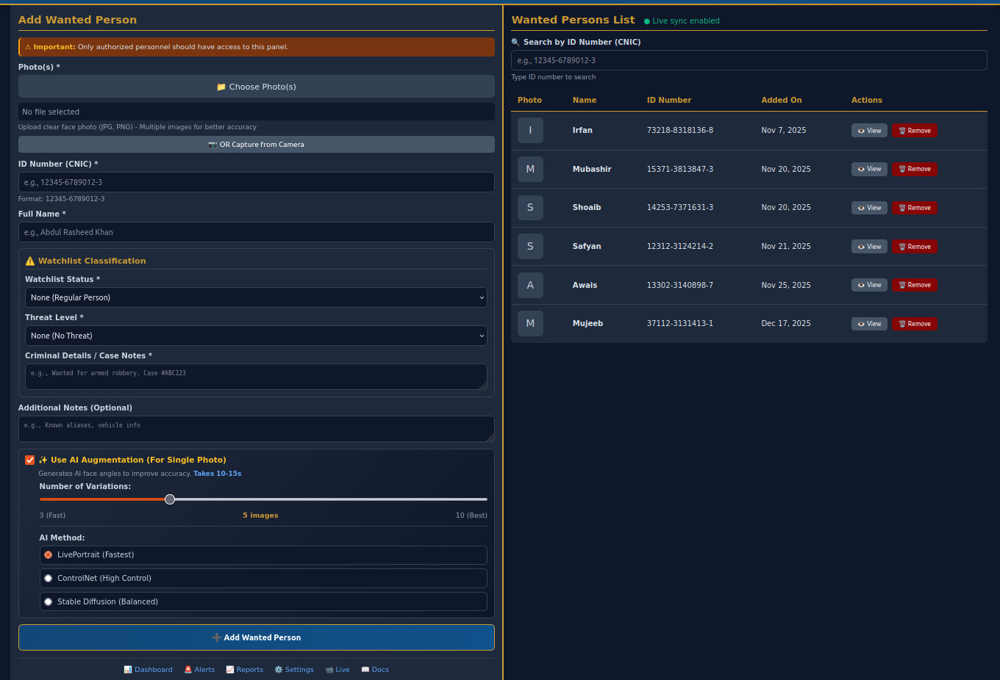
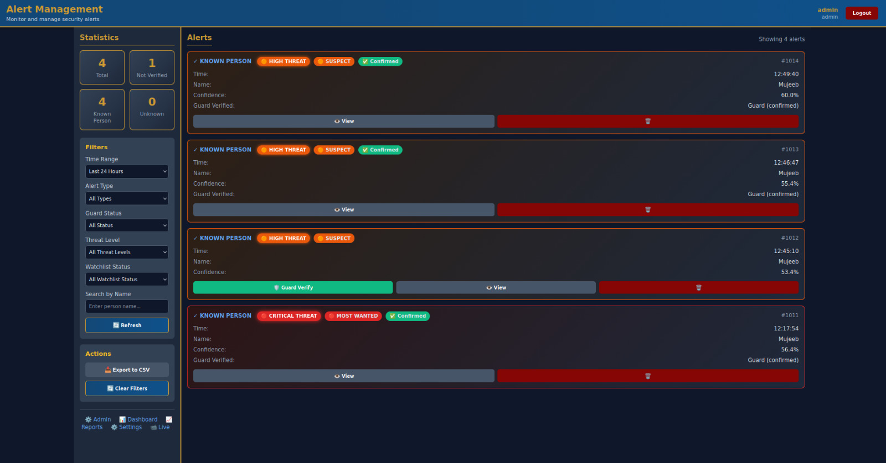
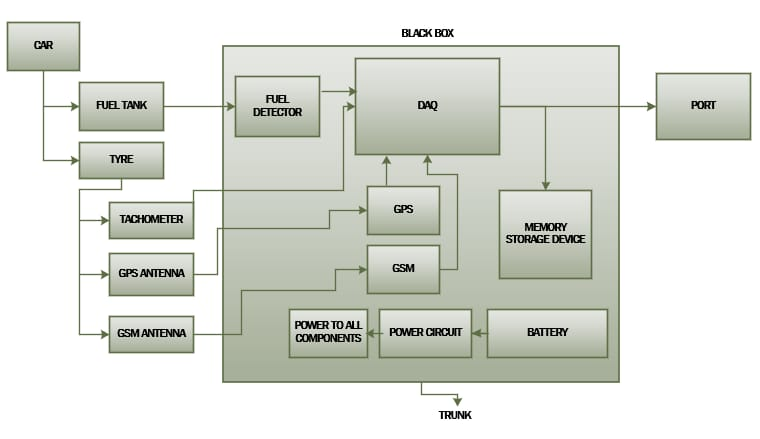
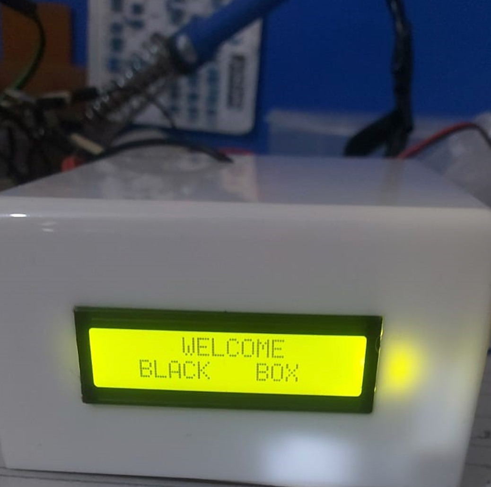

MS Electrical Engineering, NUST, Pakistan
Electrical engineer with 3+ years of industry experience in embedded systems and FPGA design, currently pursuing MS at NUST with research in silicon nitride photonics. My thesis focuses on designing a high-efficiency apodized focusing grating coupler, achieving 69.1% coupling efficiency — currently being fabricated at LAAS-CNRS, France. I combine strong hardware engineering fundamentals with hands-on simulation, edge AI deployment, and photonic device design.
Designed an apodized focusing grating coupler (FGC) on a 300 nm silicon nitride platform for fiber-to-chip coupling at 1550 nm. The device uses a single full-etch process with SiO2/PMMA cladding, achieving 69.1% coupling efficiency (−1.61 dB) to SMF-28 fiber — a 43% improvement over the uniform baseline (48%).
The apodization ramps the duty cycle from 12.5% to 25% across 260 grating teeth (21 sections) to shape the radiated field for optimal Gaussian mode matching. A parametric sweep of 1,472 FEXEN electromagnetic simulations was conducted to construct the effective index lookup table. The complete design-to-GDS pipeline was developed in MATLAB (3,000+ lines). The device is currently being fabricated at LAAS-CNRS, Toulouse, France.




LAAS-CNRS, Toulouse, France — Device fabrication.
University of Málaga, Spain — Reference layout code (Robert Halir); 3 critical bugs identified and fixed.


Production-ready real-time face detection and recognition system deployed on NVIDIA Jetson AGX Orin. GPU-accelerated SCRFD detection with TensorRT FP16 optimization (25-30 FPS), FAISS GPU for sub-millisecond similarity search across 1000+ faces. Features multi-face tracking, RTSP camera integration (Hikvision), FastAPI backend with WebSocket real-time alerts, and a complete web dashboard with JWT authentication.


Real-time frequency detection system using ESP32 with INMP microphone. FFT analysis detects frequencies up to 10 kHz with both 1-second and 4-second windows. Includes a fire alarm trigger for the 3000–3500 Hz range and serves JSON data via HTTP API for remote monitoring.


IoT-based vehicle data logging system using ESP32 with SIM808 GPS/GSM module. Tracks speed, fuel levels, and GPS location with real-time SMS alerts. Features SD card data storage, accident detection, anti-theft monitoring, and smart battery management.
FPGA digital design (Verilog, Xilinx Vivado), embedded software (C/C++, FreeRTOS on ESP32/STM32), GPU-accelerated AI deployment on NVIDIA Jetson platforms, PCB design, and communication protocol implementation (UART, SPI, I2C, CAN, Ethernet).
Conducted lab sessions for undergraduate EE courses in embedded systems, digital design, and microcontroller programming.
Designed energy-efficient arithmetic units for FPGA-based hardware accelerators using Verilog.
Thesis: High-Efficiency Apodized Focusing Grating Coupler on Silicon Nitride Platform (Supervisor: Dr. Usman Zabit)
Courses: Photonic Integrated Circuits (A), Linear System Theory (A), Advanced Embedded System Design (A),
Machine Learning, Deep Learning, Computer Vision
FYP: Automobile Black Box (IoT-based vehicle tracking and data logging system)
Email:
mawan.msee24seecs@seecs.edu.pk
·
mujeebciit72@gmail.com
Phone: (+92) 316 223 4550
Location: Islamabad, Pakistan